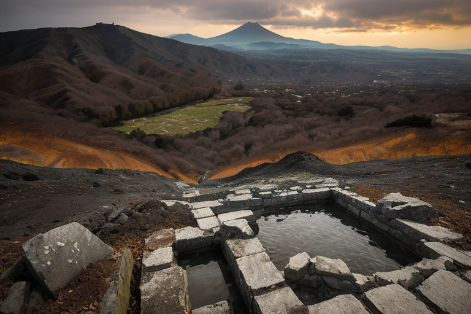
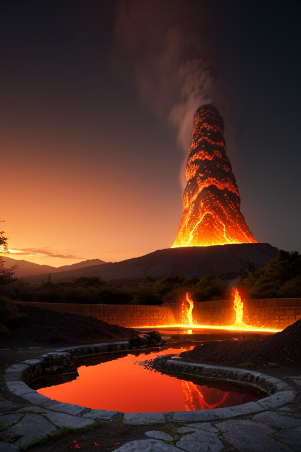
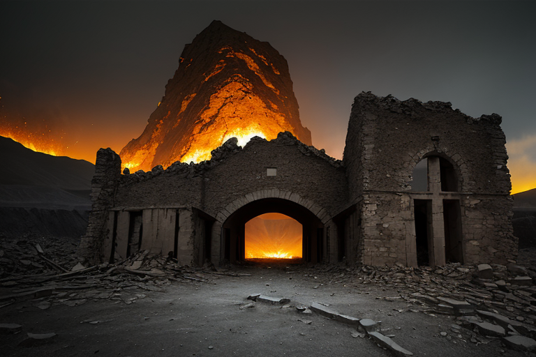
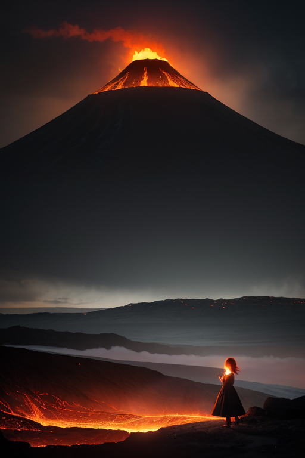
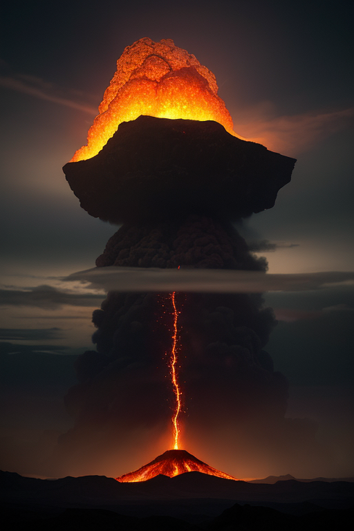

第一章 現実の熊本
あなたはまだ気づいていない。この土地にも、王がいることを。
熊本城の石垣は、2016年の地震で大きく崩れた。今も修復が続くその姿は、痛々しくも力強い。観光客がカメラを向けるその先に、見えない存在が立っていた。赤と黒の衣をまとった王、クマモトリア・ヴァルカンである。彼は崩れた石垣に手を触れ、目を閉じる。指先から微かな振動が伝わる。地中の歪み、蓄積するストレス。彼の仕事は、それを少しだけ和らげることだ。完全には消せない。しかし、次の大きな歪みが来るまでの時間を、ほんの少しだけ稼ぐことはできる。
「また、か」彼の唇から漏れた言葉は、感情を持たないはずの王のものとは思えなかった。激情のような、しかし深い諦めにも似た響きがあった。城を見上げる彼の横で、小さな炎の精霊、ヴァルニアが揺らめく。「王よ、阿蘇の気圧も不安定です」。王は頷き、黒川温泉の方向へと視線を移した。熱いものが、この土地の底を流れている。

第二章 歪みの兆候
水前寺成趣園の池面に、微かな波紋が立った。地震ではない。遠く阿蘇の山肌から、ごく僅かな噴気が漏れ出した気配だ。王は、池の畔に立つ。彼の足元では、小さな亀裂が石畳を這い、すぐに塞がる。過去の築城の熱量、そして現代の震災の衝撃。二つの大きな「歪み」の記憶が、この土地の地層に重なって眠り、時に微かな揺らぎを生む。
「立て直す度に、強くなる」。加藤清正の言葉が、地脈を伝って聞こえるようだ。彼は城を石垣で守った。王は、目に見えぬ歪みを調整する。手法は違えど、問いは同じだ。崩れても、立てるか。
ヴァルニアが彼の肩に舞い降りた。「通潤橋の水脈に、圧がかかっています」。あの精巧な水道橋も、地の変動には敏感だ。王は目を閉じ、地中の熱流と水脈のバランスを感じ取る。調整は、巨大な力への対抗ではない。ほんの少しの「ずらし」。崩壊の一歩手前で、ほんの一呼吸、間を稼ぐ作業だ。彼の掌から、赤黒い微光が地面に滲み、地中深くの圧力を分散させ始めた。

第三章 王の葛藤
通潤橋の石組みは、微かに軋んだ。王は圧力を分散させながら、同時に別の「歪み」を感じていた。熊本城の石垣が、2016年の震災で大きく崩れたあの日と同じ種類の、地中深くからの「うねり」だ。これは調整の域を超えている。本震級の前兆かもしれない。
「止めるべきか」ヴァルニアの声が震えた。王の役目は災害を消すことではない。しかし、この「うねり」の先には、またあの崩れ落ちる石垣、避難所の灯り、人々の慟哭がある。彼は感情を持たぬ存在として、自然の摂理に手を出すべきではない。だが、彼の内側には、清正が築いた堅固な意志と、この地で育まれた「闘志」が滾っていた。止めることはできない。しかし……「立て直す」ための「間」を、これ以上に稼ぐことはできないか。
彼は決断した。巨大なエネルギーを止めるのではなく、その「矛先」を、ほんの少しだけ、人のいない阿蘇の荒れ地へと「ずらす」。王の紋章が灼熱のように輝いた。それは変革への加担ではなく、再び立ち上がるための、せめてもの時間の調整であった。

第四章 妖精との対話
「王よ、その選択は『変革』に加担することです」
ヴァルニアの声は、噴気孔から漏れる熱風のように、低く熱かった。彼女は王の決断の意味を、最もよく理解していた。巨大なエネルギーの矛先をずらすこと、それは結果として、阿蘇の古い地形を一変させるかもしれない。変革線の妖精である彼女は、その必然性を知っていた。
「この地は、何度も崩れました。城も、山も。しかし、その度に、人は土を盛り、石を積み直した。『立て直す』意志そのものが、この国の礎です」
王は黙って、眼下に広がる熊本の街並みを見下ろした。2016年の揺れが残した傷跡は、まだ生々しい。しかし、その隙間から、新しい命が、新しい営みが、確かに芽吹いていた。
「崩れることを恐れて、何もしないのか。それとも、崩れてもまた立てると信じて、一歩を踏み出すのか」
ヴァルニアの問いは、王自身の内なる闘志に重なった。彼は感情を持たぬ存在として派遣された。しかし、この土地の、崩れては立ち上がる繰り返しの歴史が、彼に「覚悟」という感情を植え付けた。調整とは、時に、痛みを伴う選択である。

第五章 微調整と余韻
阿蘇山の火口が不気味な赤みを帯びた。2016年4月14日、最初の激震が熊本を襲う数時間前、クマモトリア・ヴァルカンは地中の歪みの奔流を掌に感じていた。彼にできるのは、破壊を無にすることではない。ほんのわずかな調整だけだ。彼はヴァルニアとアソリアに命じた。噴気圧を分散させ、次の巨大な歪みの解放点を、わずかにずらすように。城下町の真下から、人里離れた地域へ。代償は、彼自身の「存在の安定」だ。王の星との結びつきが、大きく損なわれる。
地震は起こった。しかし、その最大の衝撃は、計算されたように熊本城天守をかすめ、石垣の一部を崩壊させたが、城下の密集地への直撃は、かろうじて避けられた。多くの命が失われ、街は深く傷ついた。それでも、歴史の核である城は、完全には崩れずに残った。それは、再び立ち上がるための、痛みを伴う選択の跡だった。
あなたの町にも、王がいる。